社交媒体分析
与多智能体
从平台数据到群体智能研究流水线
第十二课
机器学习与自然语言处理
郑思尧 · 2026
上节课留下的问题
第十一讲：多模态模型
图像、视频、音频可以进入模型。
但模型“看懂了”不等于研究问题被回答了。
今天的问题
社交媒体数据同时包含文本、图像、互动、关系和时间。
你需要的不只是一个模型，而是一套可复核的研究流水线。
社交媒体分析不是“把帖子丢给 AI”，而是把平台痕迹转化为可解释、可验证的社会科学证据。
今天的路线图
1
社交媒体是什么数据
帖子、用户、关系、互动、时间和多模态材料。
2
偏差与研究设计
平台可见性、采集边界、伦理与可复现。
3
内容、网络、时间
三类分析信号如何服务理论解释。
4
多智能体
编排拓扑、A2A 通信与 OpenClaw 落地。
先看原文图：社交媒体数据长什么样
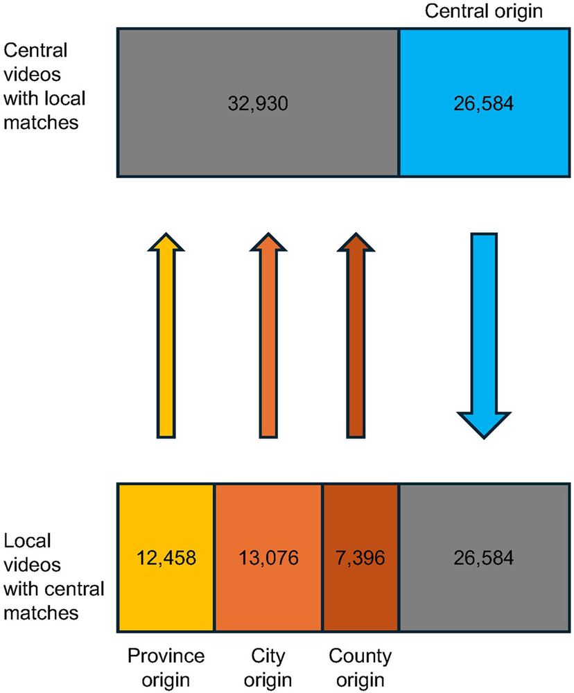
抖音政务视频：内容不是单向下发，地方内容也会被中央账号再传播。
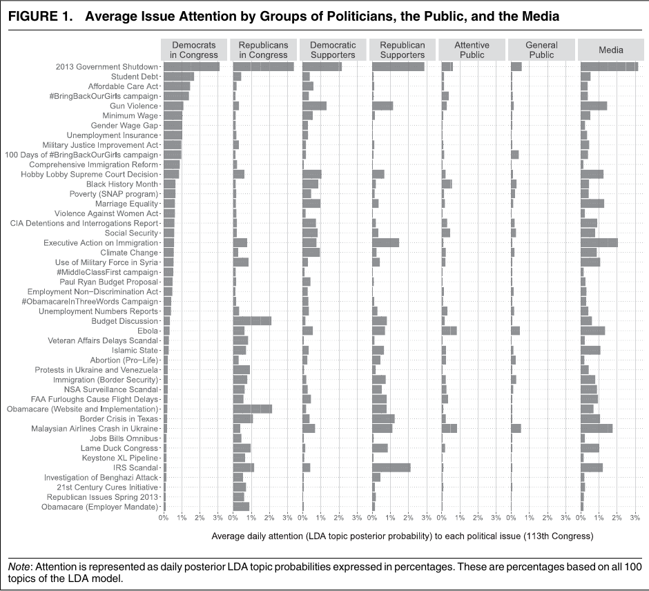
议员、公众、媒体对同一组议题的注意力分布并不相同。
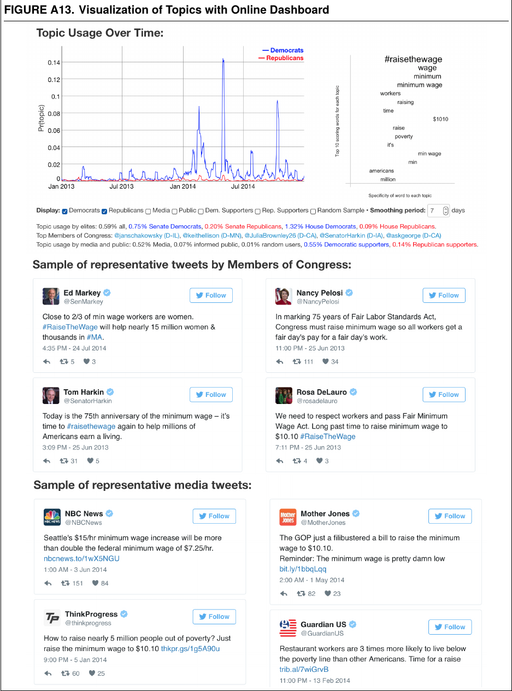
appendix 里的 dashboard 把 topic、时间序列和原帖样本连起来。
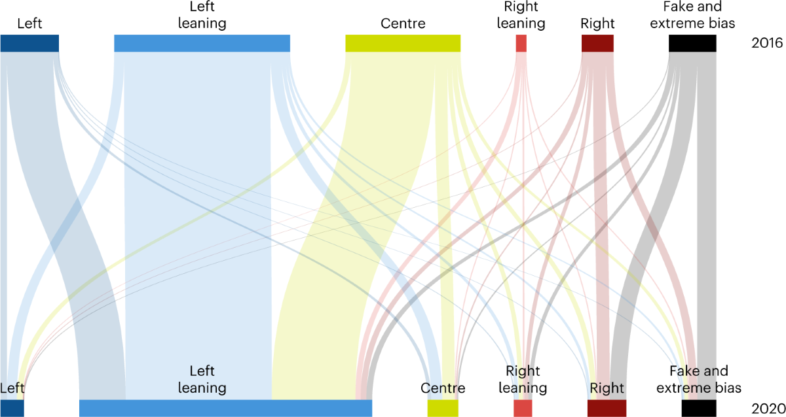
用户在新闻媒体类别之间移动：流向图比均值更容易讲清楚结构变化。
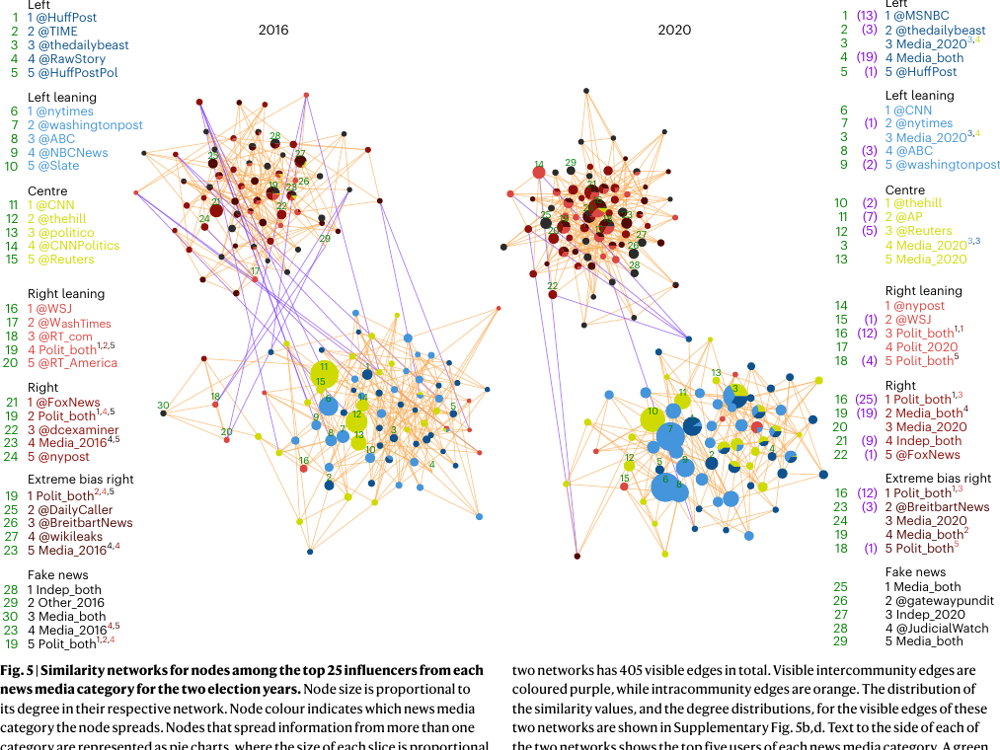
影响者网络的团块结构：网络图直接呈现“谁和谁被同一批人转发”。
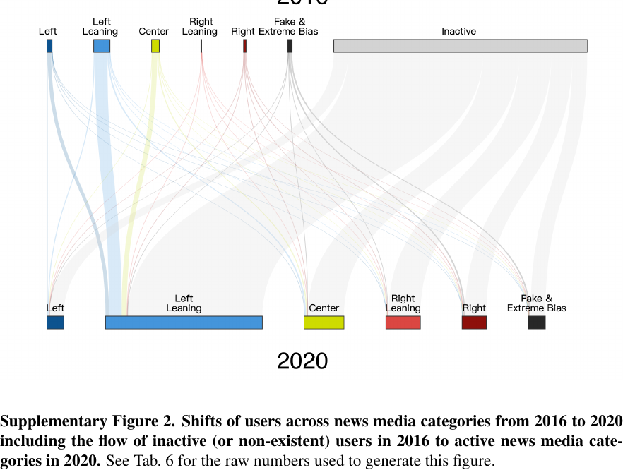
appendix 图提醒我们：流失、不活跃和删号不是背景噪音，也是样本机制。
图源：Pan, Xu & Jiang, AJPS 2025；Barberá et al., APSR 2019 及 online appendix；Waller & Anderson, Nature Human Behaviour 2023 及 supplementary information。
案例一：抖音政务账号的“去中心化传播”
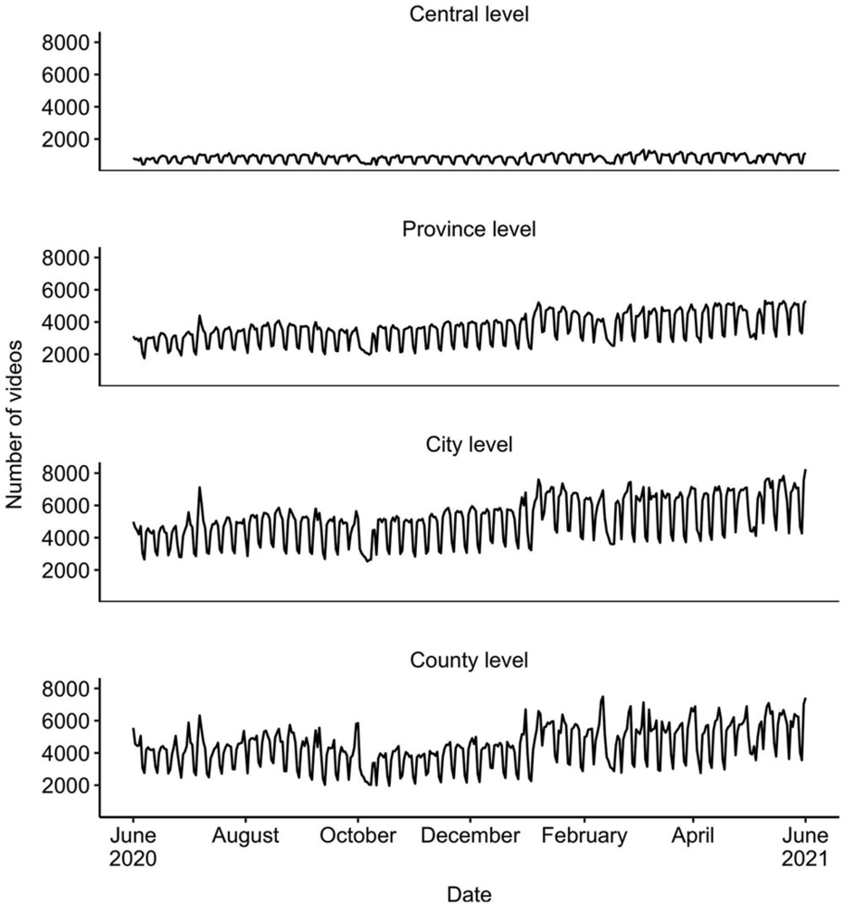
不同层级账号的日发布量。
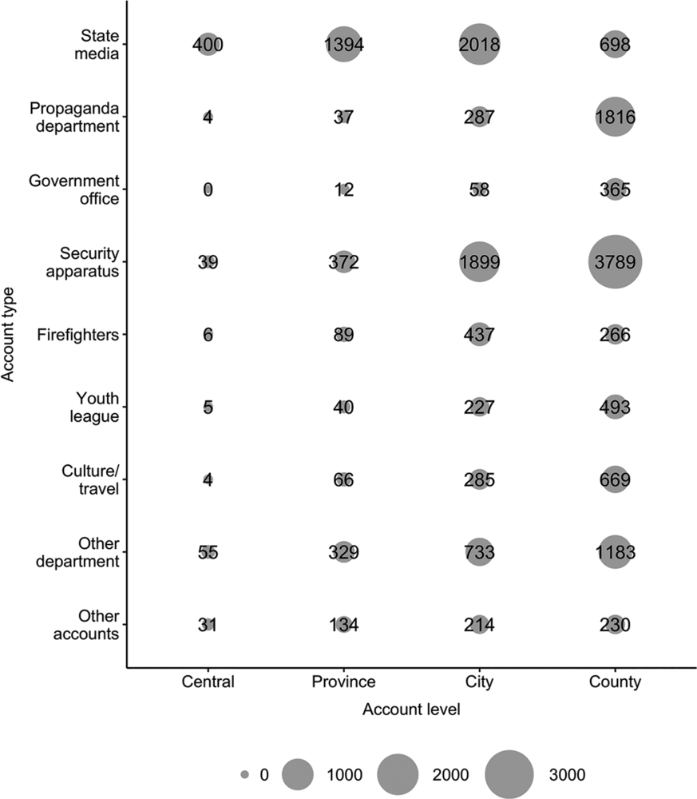
账号类型与行政层级交叉。
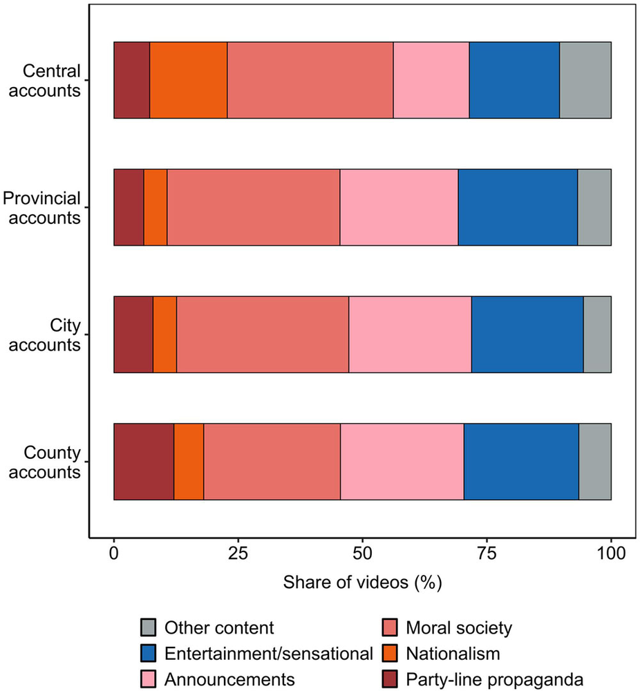
内容类别随行政层级变化。
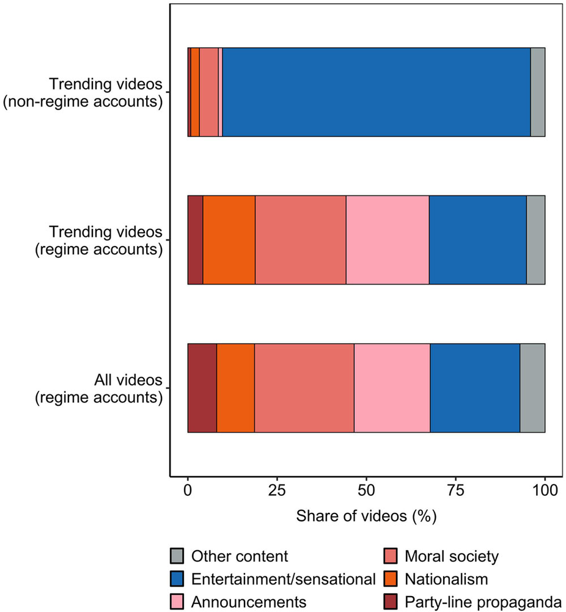
政务账号与非政务热视频的内容构成差异。
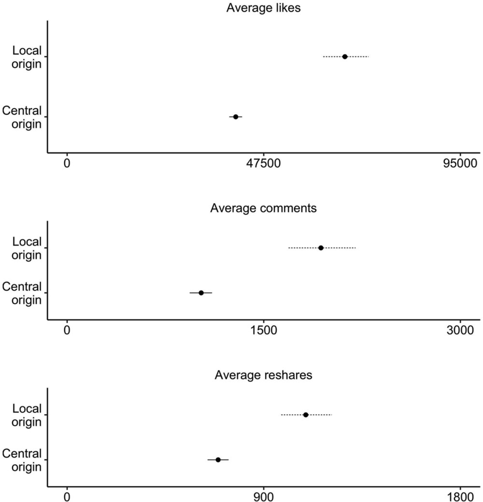
不同来源内容的互动差异。
这一组图的教学点：同一平台研究同时需要时间、账号、内容、传播方向和互动结果。
同一条帖子，同时是很多东西
内容对象
正文、标题、图片、视频、链接、话题标签。
时间对象
突发、升温、衰减、周期性、平台推荐节奏。
平台对象
搜索、推荐、限流、审核、接口、商业规则。
研究对象
态度、情绪、动员、身份、议题、传播机制。
原文图：同一个“帖子”背后是生产网络
讲授点：内容类别、行政层级和转发方向一起定义传播机制；不能把视频只当作一段文本。
平台痕迹不是社会本身
平台痕迹是行动留下的记录。
它来自平台设计：什么能被看见、什么能被转发、什么能被搜索、什么会被删除。
- 评论多，可能是争议，也可能是平台推送。
- 点赞少，可能是没人认同，也可能是人们不愿公开表态。
- 热搜上榜，可能是社会关注，也可能是平台运营。
- 话题消失，可能是兴趣衰减，也可能是可见性改变。
先把研究对象说清楚
| 你想研究什么 |
平台上能看到什么 |
可能的变量 |
最容易错在哪里 |
| 公众情绪 |
帖子和评论里的表达 |
情绪方向、强度、对象 |
沉默者不可见，讽刺难识别 |
| 议题扩散 |
转发链、话题标签、时间序列 |
扩散速度、桥接节点、峰值时间 |
推荐机制与真实传播混在一起 |
| 身份动员 |
头像、简介、标签、语言风格 |
身份线索、群体边界、行动号召 |
把表演性身份当成稳定属性 |
| 政策反馈 |
政策文本下的评论与二次传播 |
支持/反对、诉求类型、理由结构 |
平台用户不代表政策受众总体 |
操作化：从社会现象到可检查变量
社会现象
平台痕迹
可观测字段
变量定义
验证规则
关键原则：不要从“我抓到了什么字段”开始，而要从“我想解释什么机制”开始。
Appendix 也要看：样本是怎样被筛出来的
这张图比方法段更直观。
它把随机用户样本、账号判定、语言过滤、平台约束和人工检查串成一个可复核流程。
- 样本框不是“Twitter 用户”，而是被一系列规则筛过的用户。
- appendix 图能帮助读者发现论文主文里看不到的排除路径。
图源：Barberá et al., APSR online appendix, Figure A1。
四类常见偏差
覆盖偏差
谁在这个平台上？谁不在？学生、老人、低频用户、被封禁用户是否被排除？
可见性偏差
平台把哪些内容推给你？搜索结果、热榜、推荐流都不是自然抽样。
采集偏差
关键词、时间窗、API 权限、反爬限制会决定你实际拿到什么。
处理偏差
去重、过滤、抽样、账号识别、文本清洗可能把少数声音洗掉。
“大数据”也可能只是很大的方便样本
看起来强
百万帖子、连续时间、自然发生、低成本、可重复抓取。
真正危险
样本框不透明、平台规则变化、删除不可见、算法推荐混入因果过程。
样本量不能自动抵消样本框错误。很多时候，它只是让错误更稳定。
采集日志是研究的一部分
| 必须记录 |
为什么重要 |
报告时怎么写 |
| 平台、入口、关键词、时间窗 |
定义样本框 |
“我们采集的是可搜索的公开内容，不是全平台总体。” |
| 失败请求、缺失字段、限速 |
判断数据是否系统性缺失 |
“高峰期接口失败率较高，传播峰值可能被低估。” |
| 清洗规则与删除数量 |
避免事后调参 |
“去重后删除 18%，主要来自同账号重复转发。” |
| 人工检查样本 |
发现模型和规则的盲区 |
“抽检显示讽刺表达是主要误判来源。” |
伦理边界：公开不等于随便用
可识别风险
小样本、地方事件、截图和原文引用都可能让个人被重新识别。
二次伤害
对弱势群体、受害者、冲突事件的再传播可能扩大暴露。
平台条款
合规采集、最小化保存、不要公开可复原的个人级原始数据。
课堂原则：只用公开、低风险、教学用样例；正式研究要走伦理审查和数据治理流程。
案例二：议题注意力，不只是“谁发得多”
这张图先把不同群体的议题注意力摊开：同一议题在议员、支持者、一般公众和媒体之间的权重不同。
原文图：谁先动，谁跟随
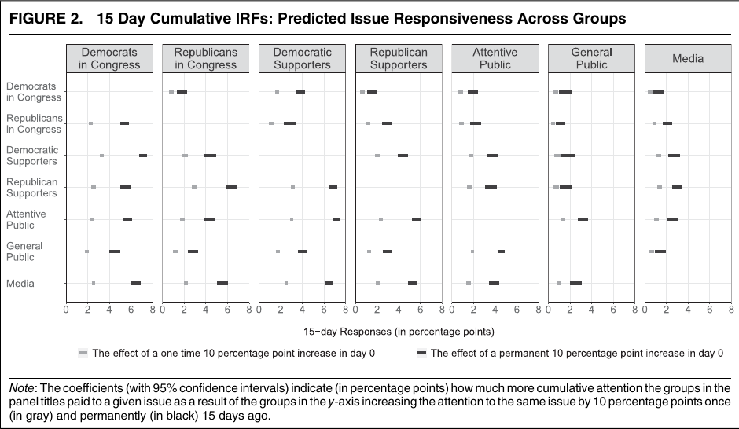
VAR/IRF 把“注意力变化之后，谁的注意力也变了”画出来。
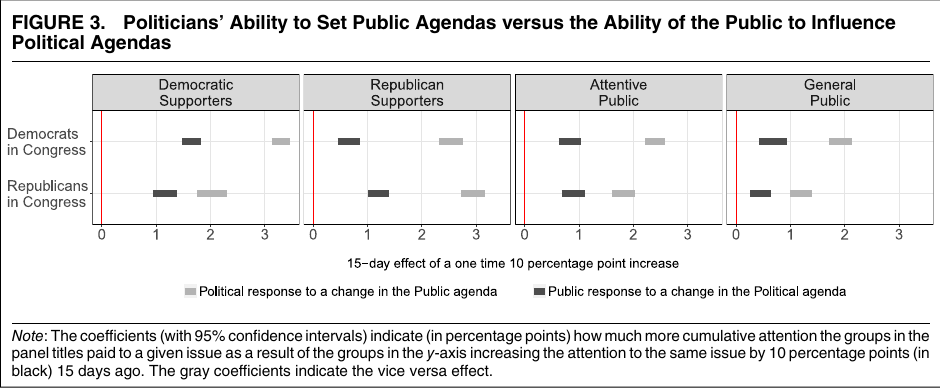
把政治议程影响公众、公众影响政治议程放到同一张图里比较。
图源：Barberá et al., APSR 2019, Figures 2-3。
原文图：机制可以分解到具体议题
讲授点：先用总体模型回答“谁影响谁”，再回到议题层面解释“在哪些议题上更明显”。
Appendix 的价值：topic 要能回到原帖
这不是“多一张好看的图”。
它把 topic usage over time、关键词、代表性 tweets 和媒体样本放在一起，让主题模型的解释可被检查。
- 模型输出必须能回到具体文本。
- appendix 可以承担透明性和复核性。
图源：Barberá et al., APSR online appendix, Figure A13。
案例三：影响者、新闻链接与极化
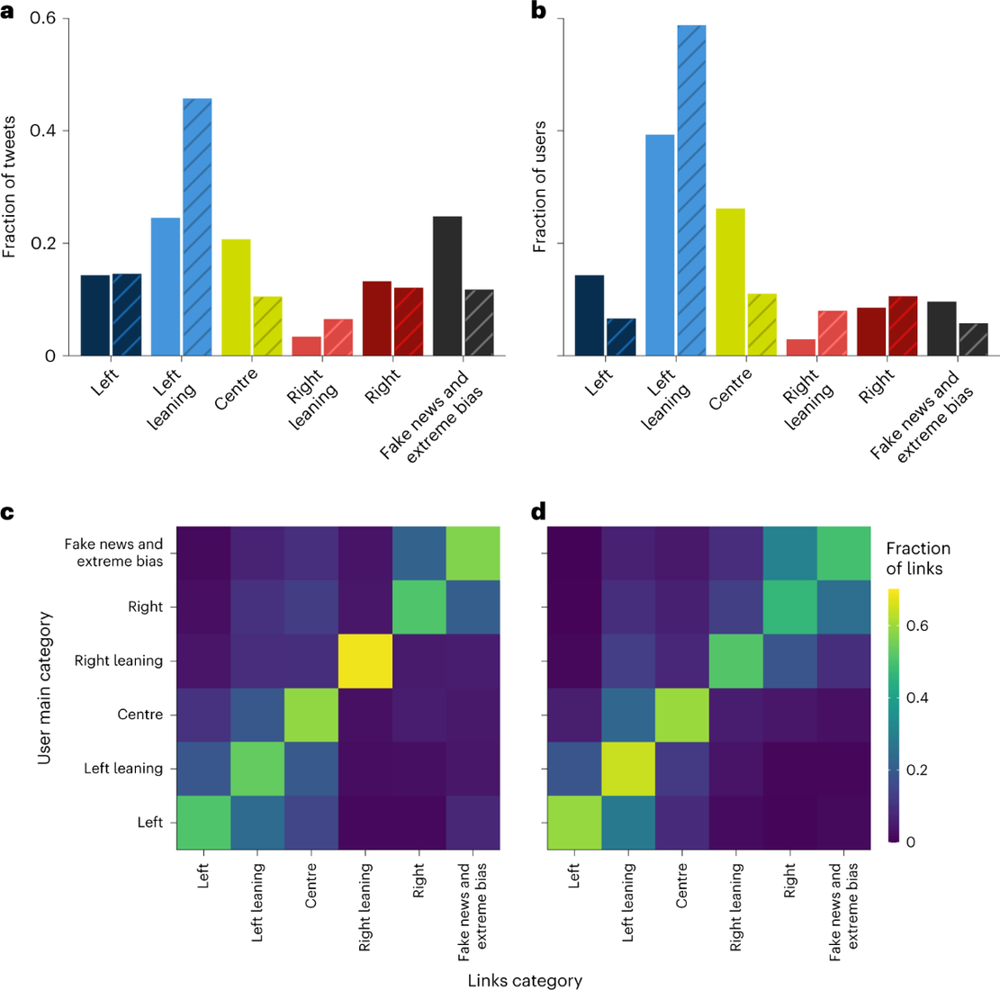
不同新闻类别在 tweets 和 users 中的分布。
2016 到 2020，用户跨新闻媒体类别的流向。
图源：Waller & Anderson, Nature Human Behaviour 2023, Figures 1-2。
原文图：网络结构本身就是发现
同一批 top influencers 的 retweeter similarity network 从 2016 到 2020 更分裂；这比只报告一个极化指数更容易让学生看懂机制。
原文图：从网络再回到潜在意识形态
图源：Waller & Anderson, Nature Human Behaviour 2023, Figure 6。注意这里不是情绪分类，而是用转发关系估计潜在位置。
Supplementary figures：样本流失也是机制线索
2016 不活跃或不存在的用户，在 2020 进入不同新闻类别。
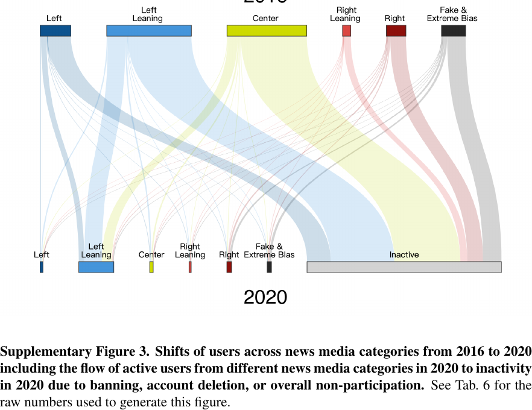
2016 活跃用户到 2020 不活跃、删号或不再参与。
讲授点：appendix 不只是“备份结果”，也可能包含理解数据生成过程的关键图。
内容分析：帖子在说什么
传统 NLP 能做
关键词、主题、情绪、立场、框架、命名实体。
LLM / VLM 能补
复杂语义、讽刺解释、图文关系、论证结构、案例摘要。
不要只问：这条帖子是正面还是负面？
更好的问法：它把责任归给谁？调用了什么身份？提出了什么行动？它和图像是否互相强化？
从热搜标题转向微趋势
微趋势分析的重点不是“这个话题火了”，而是“为什么在这个时间窗、这个群体、这个表达方式突然变多”。
时间分析：什么时候发生
时间序列不要只画曲线。要把平台事件、线下事件、媒体报道、政策节点一起放进解释框架。
多模态社交媒体：第十一讲接到这里
图像不是装饰
截图、表情包、现场照片、视频封面常常承载比正文更强的情绪和身份线索。
图文关系才是变量
文字说理性讨论，图片却在羞辱对方；这不是噪音，而是政治表达方式。
社交媒体的“意义”经常在这些模态之间，而不是某一个字段里。
社交媒体项目可以这样写
| 报告部分 |
你需要交代什么 |
| 研究问题 |
社会现象、理论预期、平台为什么适合观察。 |
| 数据来源 |
平台、时间窗、关键词、采集方式、缺失和限制。 |
| 分析结果 |
内容、网络、时间或多模态信号中的主要发现。 |
| 验证与边界 |
抽检、反例、不能推广到哪里。 |
Part 4 / 4多智能体：Swarm、Team 与 Agent-to-Agent 通信
后半部分只抓三件事
1
Swarm
并行蜂群：多个 agent 同时探索不同路径，然后共享、比较和汇聚。
2
Team
团队式协作：有稳定角色、运行规则、终止条件和可检查交付物。
3
Agent-to-Agent Communication
agent 之间如何发现能力、传递任务、追踪状态、交付 artifact。
多智能体不是“很多 AI 一起聊天”，而是把探索、协作和通信规则设计清楚。
Microsoft AutoGen 给我们的二分法
Swarm
本课采用更直观的课堂定义：多个 agent 同时探索同一个开放问题，再把结果汇聚比较。
Team
Team 是为共同目标协作的一组 agent。AutoGen 支持 RoundRobin、Selector、Magentic-One 等团队运行方式。
依据 Microsoft AutoGen 文档：Teams 教程与 Swarm 教程。课堂上把它们理解为两类多智能体组织方式。
Swarm：核心是并行探索与汇聚
Swarm 的课堂定义：多个 agent 同时从不同角度探索同一个开放问题。
重点不是线性顺序，而是并行展开、共享中间结果、合并冲突结论。
- 并行：不同 agent 同时处理不同假设、工具或信息源。
- 共享：中间发现写入同一个共享状态，而不是只留在各自上下文。
- 汇聚：最后要比较、去重、解决冲突，形成一个合并结果。
- 终止：必须有停止条件，否则并行探索会无限扩散。
Swarm 适合解决什么问题？
适合：开放问题
你不知道哪条路径有用，需要同时试多个方向。
适合：宽搜索
多个 agent 可以并行处理不同假设、工具或信息源，然后汇聚。
不适合：固定流程
如果每一步顺序都已知，用 Team 的轮次规则更清楚。
最大风险：合不回来
如果没有共享状态和汇聚规则，多个 agent 只是同时制造更多碎片。
Team 的三个组成部分
Participants
有哪些 agent？每个 agent 的职责、工具、输入和输出是什么？
Turn Policy
谁先说、谁后说？轮流、选择器、主控调度，还是固定流水线？
Termination
什么时候停止？例如 APPROVE、最大轮数、人工确认、错误阈值。
AutoGen 的例子：primary agent 写作，critic agent 反馈，直到 critic 输出 APPROVE，团队停止。
Team 的常见运行方式
| Team 类型 |
谁来决定执行结构 |
适合什么任务 |
停止条件 |
| RoundRobin |
固定轮流 |
写作-批评-修订、教学演示、小组互评 |
出现 APPROVE、达到轮数、人工停止 |
| Selector |
模型或规则选择发言者 |
需要根据上下文选择专家的任务 |
任务完成、无可用下一步、人工停止 |
| Magentic-One |
编排者协调多个 worker |
开放的网页、文件、代码和工具任务 |
编排者判断完成或失败 |
| Swarm |
多个 agent 并行探索后汇聚 |
需要宽搜索、多假设、多工具并行的任务 |
完成汇聚、达到预算或人工停止 |
知识点三：Agent-to-Agent Communication
不是普通聊天
普通聊天只关心下一句话；agent-to-agent 通信要关心能力、任务、状态和交付物。
更像工作单
一个 agent 把“我要你完成什么、需要什么输入、结果交给谁”表达成可追踪任务。
如果没有通信协议，多智能体就会退化成“把一段 prompt 转发给另一个模型”。
A2A 的五个核心对象
Agent Card
这个 agent 是谁、会什么、在哪里、需要什么认证。
Message / Part
一次通信回合；Part 可以是文本、文件、URL 或结构化 JSON。
Task
有状态的工作单，带 taskId 和生命周期。
Artifact
任务交付物：表格、报告、图片、结构化数据。
contextId
把多个 message 和 task 放进同一个目标上下文。
referenceTaskIds
后续任务明确引用前一个任务，避免“凭印象继续”。
A2A 是独立的通信层
| A2A 对象 |
它解决的问题 |
| Agent Card |
调用方如何发现一个 agent 的能力、地址、认证方式和输入要求。 |
| Task |
长任务如何拥有 taskId、状态、进度和终止状态，而不是散落在聊天记录里。 |
| Artifact |
结果如何作为结构化产物返回，而不是只返回一段自然语言。 |
| contextId |
同一个目标下的多个 message 和 task 如何保持连续。 |
最后两句：OpenClaw 怎么实现
长期 agent
OpenClaw 用 agentId、workspace、agentDir、session store 和 bindings 让多个 agent 隔离运行。
一次性调用
openclaw agent --agent collector --message ... --json 可以直接向某个 agent 发起一次任务。
接下来动手操作时，我们只关心两件事：把 agent 配出来；把任务发给正确的 agent。
课堂练习：判断该用 Swarm 还是 Team
练习 A
用户说：“帮我规划旅行。可能要订机票、退票、查酒店，还可能需要继续问我信息。”
练习 B
用户说：“写一段说明，然后请 critic 反馈，再由 primary 修改，直到 critic 说 APPROVE。”
答案不是背概念：A 更像 Swarm，因为可以让多个 agent 并行查不同方案；B 更像 Team，因为轮次和停止条件都很清楚。
阅读线索：社交媒体研究
抖音与去中心化宣传
Pan, Xu & Jiang, 2025, “Decentralized propaganda in the era of digital media”
议题注意力与 agenda setting
Barberá et al., 2019, “Who Leads? Who Follows?”
影响者网络与极化
Waller & Anderson, 2023, “Quantifying social organization and political polarization in online platforms”
社交媒体数据偏差
Tufekci, 2014, “Big Questions for Social Media Big Data”
Post-API 时代
Freelon, 2018, “Computational Research in the Post-API Age”
错误信息扩散
Vosoughi, Roy & Aral, 2018, “The spread of true and false news online”
平台实验与极化
Bail et al., 2018, “Exposure to opposing views on social media can increase political polarization”
这一页对应前半讲：真实论文图像、平台数据偏差、post-API 数据可得性和极化研究。
阅读线索：多智能体
多智能体编排模式
GuruSup, 2026, “Agent Orchestration Patterns: Swarm vs Mesh vs Hierarchical vs Pipeline”
Agent-to-Agent 协议
A2A Protocol docs: Agent Card, Message, Task, Artifact, contextId
OpenClaw agent send
OpenClaw docs: openclaw agent, sub-agents, multi-agent routing
这一页对应后半讲：Swarm、Team、A2A 通信层，以及 OpenClaw 中的一次性 agent 调用。
多智能体的关键
不是数量，是组织方式
Swarm 用并行探索扩大搜索，Team 用角色和质量门稳定产出，A2A 让 agent 之间的任务、状态和 artifact 可追踪。
接下来进入 OpenClaw 动手操作：把 agent 配出来，把任务发给正确的 agent。
Next: OpenClaw hands-on。郑思尧 2026